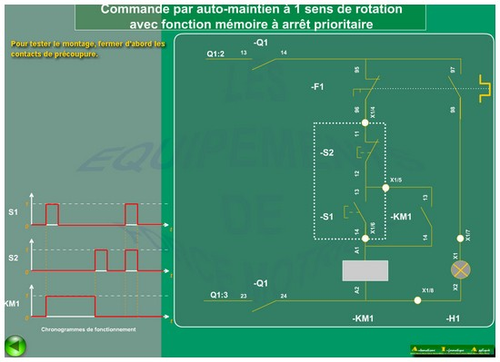
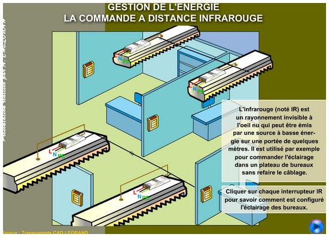
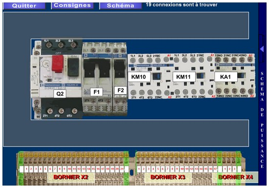
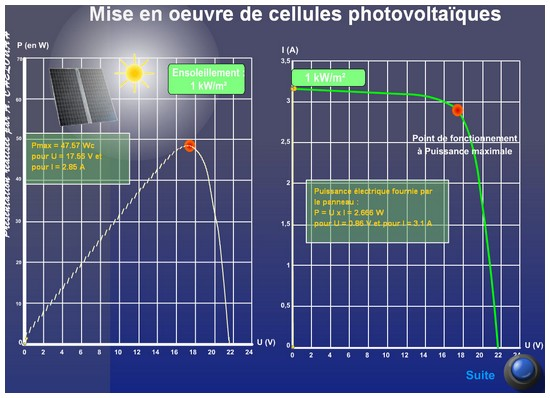
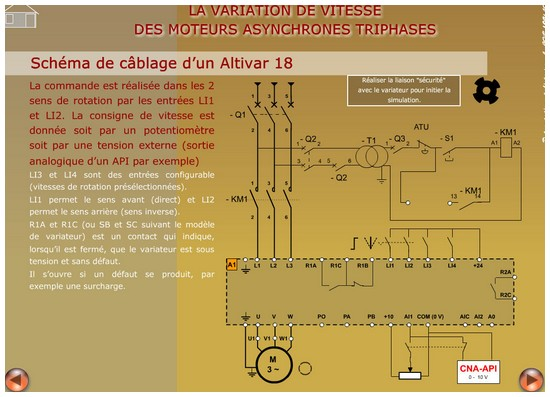

Cette rubrique rassemble des animations interactives, fiches multimédias et QCM pour aborder
les circuits, les machines électriques, les protections, la sécurité et la production d’énergie
en électrotechnique.

Simulation d'un équipement de force motrice
Mots‑clés : démarrage direct, moteur asynchrone triphasé, commande, puissance, défaut thermique
Animation basée sur le schéma animé du démarrage direct d’un moteur asynchrone triphasé,
permettant d’observer les interactions entre commande et puissance et de simuler un défaut thermique.
Voir l’animation

La commande impulsionnelle et par auto-maintien
Mots‑clés : commande impulsionnelle, auto‑maintien, force motrice, automatisation
Présentation des différents schémas de commande rencontrés dans les équipements de force motrice
pour mieux comprendre les objectifs d’automatisation.
Voir l’animation

Les indices de protection
Mots‑clés : IP, protection, enveloppes, sécurité
Animation illustrant le tableau des indices de protection pour mieux en comprendre
la signification et les applications.
Voir l’animation

Le compteur électromagnétique
Mots‑clés : comptage d’énergie, compteur électromagnétique, tarif EDF
Présentation interactive du compteur électromagnétique pour décoder les informations
portées sur l’appareil et comprendre son fonctionnement.
Voir l’animation

Le compteur électronique
Mots‑clés : comptage d’énergie, compteur électronique, avantages, particularités
Animation montrant les avantages et particularités du compteur électronique
qui a remplacé progressivement les compteurs électromagnétiques.
Voir l’animation

Le délestage à maximum de courant
Mots‑clés : délesteur, économie d’énergie, facture EDF, 3 voies
Présentation d’un délesteur 3 voies permettant de tester son fonctionnement
et de comprendre son intérêt pour réduire la facture.
Voir l’animation

La commande à distance infrarouge
Mots‑clés : infrarouge, domotique, luminaires, confort d’utilisation
Illustration d’un système de commande à distance de luminaires par infrarouge,
avec les constituants et une simulation de fonctionnement.
Voir l’animation

Platine virtuelle – câblage de la partie puissance
Mots‑clés : câblage, départ moteur, platine virtuelle, puissance
Platine virtuelle permettant aux élèves de s’exercer au câblage de la partie puissance
d’un départ moteur à partir d’un schéma.
Voir l’animation

Platine virtuelle – câblage de la partie commande
Mots‑clés : câblage, commande, évaluation, départ moteur
Suite de la platine virtuelle puissance, utilisée comme évaluation sommative
pour le câblage de la partie commande.
Voir l’animation

Les panneaux solaires – détermination de la puissance crête
Mots‑clés : panneaux photovoltaïques, puissance crête, courbes I=f(U), rendement
Module sur l’interprétation des caractéristiques de panneaux solaires et
la détermination de la puissance crête à partir des courbes courant‑tension.
Voir l’animation

La variation de vitesse des moteurs asynchrones triphasés
Mots‑clés : moteur asynchrone, variateurs, convertisseurs statiques, vitesse variable
Cours multimédia expliquant les solutions de variation de vitesse des moteurs asynchrones
et l’apport des convertisseurs statiques de puissance.
Voir l’animation

Questionnaire sur la production, le transport et la distribution
Mots‑clés : production, transport, distribution, énergie électrique, QCM
Questionnaire utilisable en classe pour réviser la séquence sur la production,
le transport et la distribution de l’énergie électrique.
Voir l’animation

Questionnaire sur les symboles utilisés en schéma électrique
Mots‑clés : symboles normalisés, schéma électrique, auto‑évaluation
Autoévaluation pour associer objets techniques et symboles normalisés
les plus courants en électrotechnique.
Voir l’animation